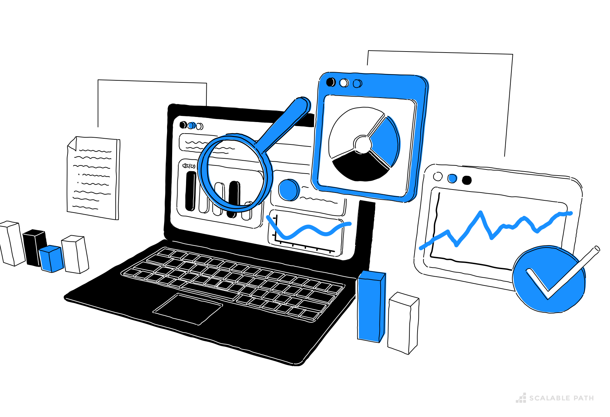

Exploratory Data Analysis on Reddit: Focusing on Women’s Issues in STEM.

Introduction
Our Exploratory Data Analysis (EDA) looks into diverse interactions on Reddit, a highly popular online site where people from all walks of life share thoughts and experiences. Our study focuses on dialogues linked to women’s issues in STEM, a topic with deep social and cultural impact. By thoroughly examining posts and opinions across various subreddits, our goal is to gather understanding on discussions revolving around women-related topics and their acceptance within the Reddit group.
We have selected a range of subreddits for this analysis:
r/xxstem
r/Feminism
r/LadiesofScience
r/womenEngineers
r/AskFeminists
r/AskWomen
Our study uses data that includes 5,200,861 comments and 370,925 posts from various subreddits. This information is from January 2021 through March 2023. We specifically filtered the subreddits Feminism, AskFeminists, and AskWomen using STEM-related keywords to focus on our study.
Dataset Descriptions
2. Submissions Dataset
The submissions dataset contains information about individual posts made on Reddit. The columns are as follows:
subreddit: Similar to the comments dataset, this indicates the subreddit where the submission was posted;
author: The username of the Reddit user who made the submission.
title: The title of the Reddit post or submission.
selftext: The body text of the submission. This is usually the main content of the post, often providing details or context beyond the title. In some posts (like image or link posts), this might be empty.
created_utc: The timestamp for when the submission was created, in UTC format.
num_comments: The total number of comments that have been made in response to the submission. This is a good indicator of how much engagement or discussion a post has generated.
score: Similar to comments, this is the net score of the submission, calculated as the total number of upvotes minus the total number of downvotes.
Table 1: Subreddit Submission and Comment Counts

Table 1 provides data on the activity in various Reddit subreddits, detailing the number of submissions and comments for each subreddit of interest. It shows that “AskWomen” is the most active subreddit with the highest counts, while “xxstem” has the least, suggesting a wide range of user engagement across these forums.
Table 3: Top 20 Common Authors by Comments and Submissions

Table 3 highlights Reddit users by level of engagement. It shows their comment count, their total comment score, submission count, and total submission score. This table presents the authors who are not only active in posting but also how the community responds to their shares through scoring.
Table 4.1: Comments Length Statistics
 Table 4.1 is full of info on comment lengths, probably from a forum or social media site. The table shows us the shortest comment has just 1 character, while the longest comment takes up a whopping 10,103 characters! Most comments average around 361.733 characters. The figure known as the median comment length is 428 characters. Meanwhile, the standard deviation is 781.748. This cool table offers a look at what a comment length in the subreddits of choice are like on the surface level and reveals the spectrum of comment sizes.
Table 4.1 is full of info on comment lengths, probably from a forum or social media site. The table shows us the shortest comment has just 1 character, while the longest comment takes up a whopping 10,103 characters! Most comments average around 361.733 characters. The figure known as the median comment length is 428 characters. Meanwhile, the standard deviation is 781.748. This cool table offers a look at what a comment length in the subreddits of choice are like on the surface level and reveals the spectrum of comment sizes.
Table 4.2: Submission Length Statistics

Table 4.2 details data about the length of entries. It shows the shortest one has 0 characters – it might have just a title or an image. The longest one has 37,983 characters, it’s very detailed. The average length is 514.986 characters. The median length is 9 characters, implying a lot of entries are quite brief. The standard deviation is 1365.61, telling us there’s a broad range in the lengths of entries, meaning there’s a wide variety of sizes in conversations starters.
Chart 1: Time Series Analysis
Chart 1.1: Subreddit Wise Analysis over Time
The visualization is split into two parts, each representing a different aspect of the Reddit data:
Submissions: This chart shows the number of posts submitted over time in each subreddit. It reflects the frequency of topics being initiated by users.
Comments: This section illustrates the number of comments made in each subreddit, offering insights into the engagement and discussion generated by the submissions.
Both submissions and comments are plotted as time series data, we can see how things shift over different periods, be it days, months, or years.
We tracked Reddit posts over time and noticed interesting patterns. Reddit threads on women’s issues showed some unique trends. One that stood out was r/AskWomen. This subreddit got very active, especially during April 2022. A lot of people submitted posts during this time. r/Feminism was another active spot, with lots of posts too. It trailed a bit behind r/AskWomen. When looking at comments, we noticed some similarities. r/AskWomen had the most comments by far, reaching a high point in January 2022. After r/AskWomen, r/AskFeminists was also very active. This verifies it’s a popular place for people to discuss topics related to STEM.
Chart 1.2: Hour-wise Analysis
Analyzing Reddit activity every hour - both posts and responses - gives us an exciting peek at users’ habits during the day. This graph displays the spread of posts and responses over various hours. It lets us see when users are most active on Reddit.
In our hour-by-hour analysis of Reddit activity, we observe distinct patterns in both submissions and comments that reflect the daily rhythms of user engagement. The data reveals notable trends in the timing of these activities. In the submissions data, the volume of submissions gradually increases during the afternoon, peaking between 4 PM and 5 PM. This trend suggests that users are most active in creating new content towards the late afternoon, possibly as they wind down their work or daily activities. Conversely, the early morning hours, specifically from 6 AM to 9 AM, see the lowest level of submissions. This dip could be attributed to typical sleeping hours for many users, resulting in reduced activity on the platform.In the comments data, a similar pattern is observed, where user engagement in discussions also reaches its zenith around 5 PM. This peak in commenting activity could indicate a time when users are more available or inclined to engage in conversations after completing day-to-day responsibilities. Like submissions, comment activity is at its lowest around 9 AM, aligning with morning routines where users might be less available to participate in online discussions.
Chart 1.3: Day-wise analysis
In a step-by-step breakdown, we study Reddit user habits. We zero in on daily post and comment counts. This lets us see how interaction and posting differ day by day. It helps us get how users act within the Reddit group.
In our daily examination, we saw steady trends in people’s interaction concerning posts and remarks on Reddit. This study provides a detailed insight into user behavior, particularly about subjects focusing on matters concerning women. We see in the Submission data that the number of posts doesn’t change much day-to-day. But, Tuesday stands out with the most entries followed closely by Friday. It looks like there might be a usual mid-week uptick in people posting. Sunday, however, is the quietest day for posts, hinting at less engagement over the weekend. Same goes for the comments people leave, it pretty much follows how the submissions go. This steady pattern of people both sharing and responding to content underlines a clear routine in how the online community operates.
Chart 2: Engagement Metrics of Number of Comments per Submissions
We study comment counts per post on numerous subreddits in our engagement metric analysis. This research is vital as it shows how users regularly interact with content in the different subreddit communities. We organized the submissions by subreddit. We then gathered and grouped the count of comments per submission. For each subreddit, we made a histogram. It shows the frequency distribution of the comment counts.
Studying the bar chart breakdowns for each subreddit shows interesting patterns and differences in how users interact mainly with the amount and rate of comments per post.
r/xxstem: A significant number of users (273) commented between 0-1 times, indicating a prevalence of minimal engagement.The graph indicates the best interactions, although unusual, hit 47 comments for each post, showing examples of increased interaction.
r/Feminism: The subreddit exhibits a wider range of engagement, with 734 people commenting 0-1 times. Certain entries garnered up to 250 responses, pinpointing specific matters or posts that deeply connected with the group.
r/AskWomen and r/AskFeminists: These subreddits popped up as the busiest ones in our study. It seems these communities are buzzing with lots of people joining the chats.
r/LadiesofScience: This online forum showed very little activity. It’s noticeable by the fewer number and amount of comments for each topic.
Different subreddits spark different levels of activity. Places like r/AskWomen and r/AskFeminists are more popular that makes people join conversations more. Some subreddits might have more engaging conversations because their content or topics hit closer to home, making more users chime in. This graph shows not just how common comments are, but how involved each community is. This study helps make sense of Reddit’s online community’s social behavior and they can guide a plan for better content and interaction.
Chart 3: Issues faced by Women in STEM
This chart gives a full picture of the different problems women in STEM face, as talked about on Reddit. We use a detailed list to see which problems are common or important on Reddit for women in STEM. They talk about problems like discrimination at work, equal rights, and healthcare. This helps us better understand the different sides to these talks about issues for women in STEM.. We use regex patterns to find the right discussions. By looking at the number of comments and posts about each problem, we get two views of the conversation.
Submissions Dataset: The data shows 36% of talk focuses on schooling and education. This large number highlights how key this topic is in discussions about women’s issues on Reddit. A considerable slice, precisely a fifth of all submissions, touch on gender equality. This shows it’s a key topic of interest. This mirrors the current discussions about feminism and the aim for the same rights and chances for women. With 9.5% of all reports, workplace discrimination is a main concern. This number shows the tough times women encounter in work situations. This includes being treated differently, facing bias, and hurdles to moving up in their careers.
Comments Dataset: Just like in the submissions posts, education holds a large part of the comments. With 37% of the talk, it shows a community’s deep dedication to education issues that impact women. Around one-third of the remarks (28%) discuss race and ethnicity issues, or the “Color” topic. This large portion shows how gender, race, and ethnic identities cross paths. It highlights the varying experiences of women from distinct backgrounds. Conversations about getting hitched and splitting up make up 14% of all remarks, showing a big curiosity in the personal and lawful sides of these subjects.
The report underlines major points relating to women’s problems, especially when it comes to education. Both submitted content and comments often mention its importance for women’s rights and power. Color and race also get much spotlight in comments, suggesting Reddit users are insightful about the complex layers of women’s lives involving both race and ethnicity. Examining the range of themes in submitted content versus comments shows a different rhythm in bringing up topics and then discussing or debating them.
1. Comments Dataset
The comments dataset includes data about individual comments made on Reddit posts. The columns are as follows:
subreddit: the subreddit name of the comment;
author: the username of the post’s author;
body: the text of the comment;
parent_id: the ID of the parent post being replied to;
link_id: the ID of the link;
id: the ID of the comment;
created_utc: the date of the comment;
score: the score of the comment.